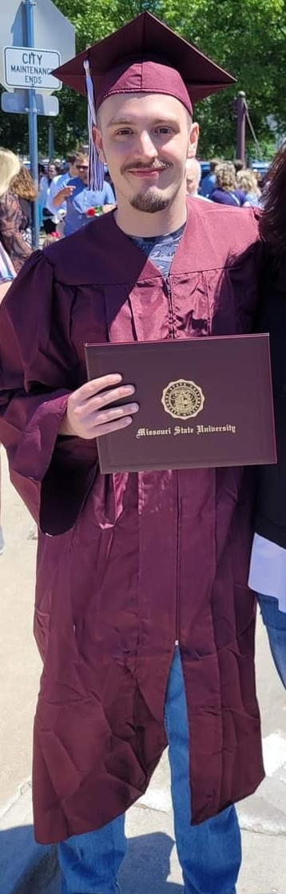

Phone: 417-214-8269 Email: zdavis708@gmail.com Github: https://github.com/ZanderDavis
My name is Zander Davis, and welcome to my portfolio! First, I want to thank you for taking the time to check it out. I graduated from Missouri State University in 2024. I received my Bachelor's degree in Computer Science with a focus on their computer science option. I also earned a minor in Mathematics and a certificate in Web Programming. I have worked with several different programming languages, including C++, Python, SQL, JavaScript, C#, Kotlin, and HTML/CSS. I began studying computer science during my sophomore year of college. Initially, I pursued engineering, thinking I would enjoy it. However, after a year, I realized it wasn't the right fit for me. I decided to switch to computer science after taking a Python class as part of my electrical engineering coursework. I was hooked from that moment on. I loved the ability to create anything I wanted, from programs to automate tasks to potentially even games if I had the time. Ultimately, I enjoy writing and building new projects and creating cool programs that can make life easier.